Most popular
Clear acrylic + standoffs
01The premium look. 5mm cast acrylic floated off the wall on polished fixings, printed to the back so colour sits behind the glass-like face.
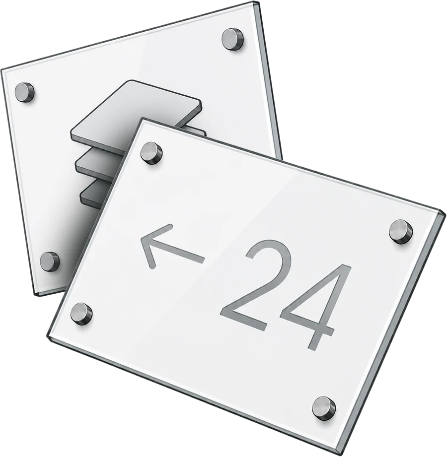
Clear acrylic panels on polished standoffs for offices, shops and homes. Cut, printed and finished to order in our UK workshop — then sent ready to hang.
One workshop, the full kit — from a single house number to a forty-piece office rollout, cut, printed and finished by hand in the UK.
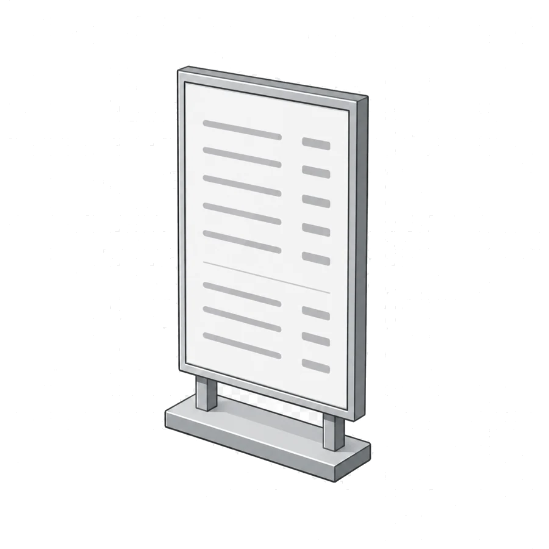
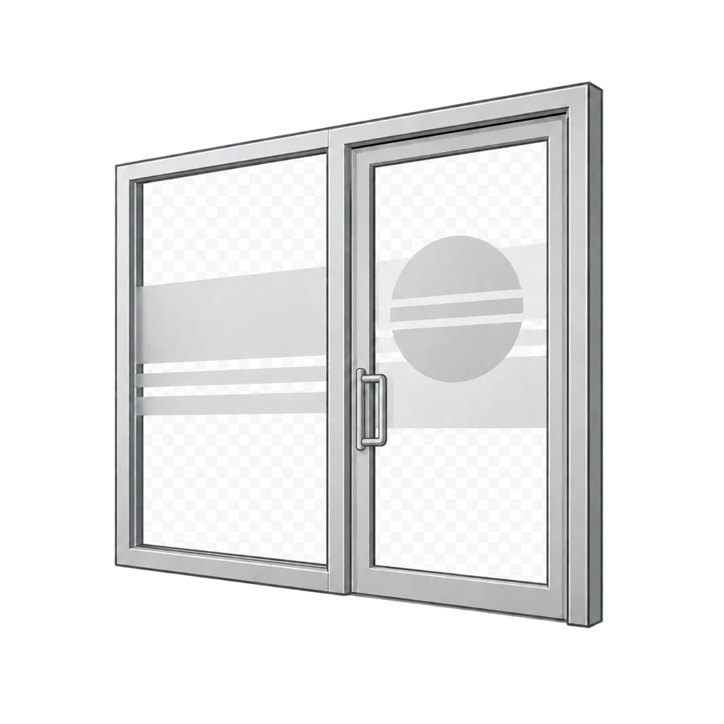
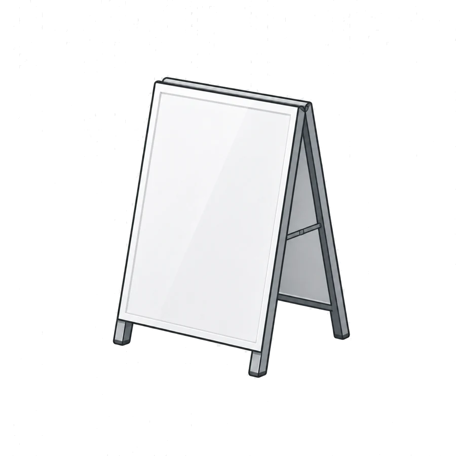
We work with premium cast acrylic — clearer, harder and flatter than the cheap extruded sheet most online printers use. Flame-polished edges, UV-stable inks, and fixings chosen for the wall it's going on. Outdoor signs get a weatherproof build as standard.
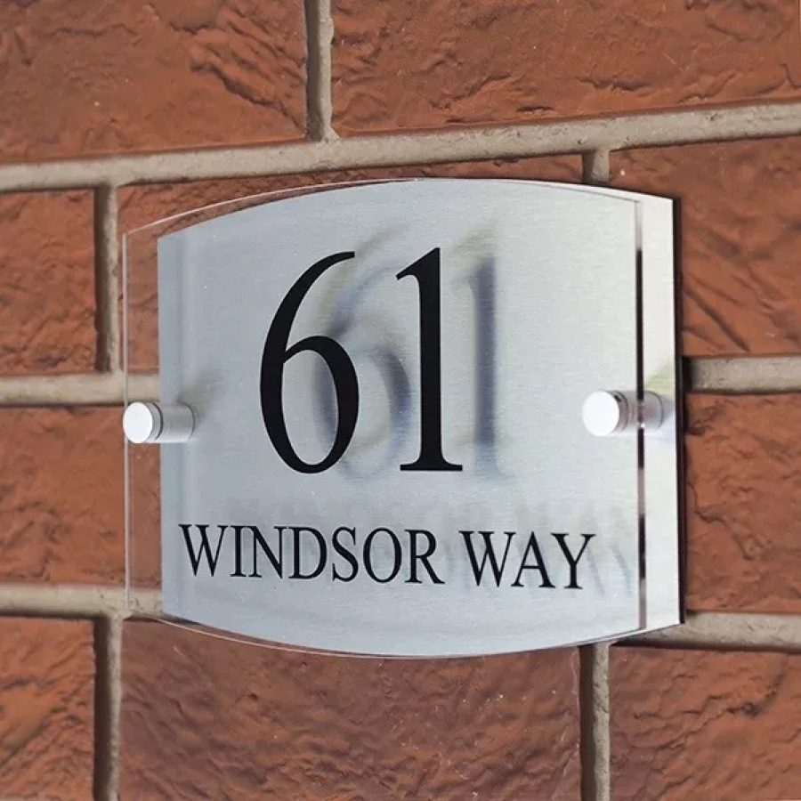
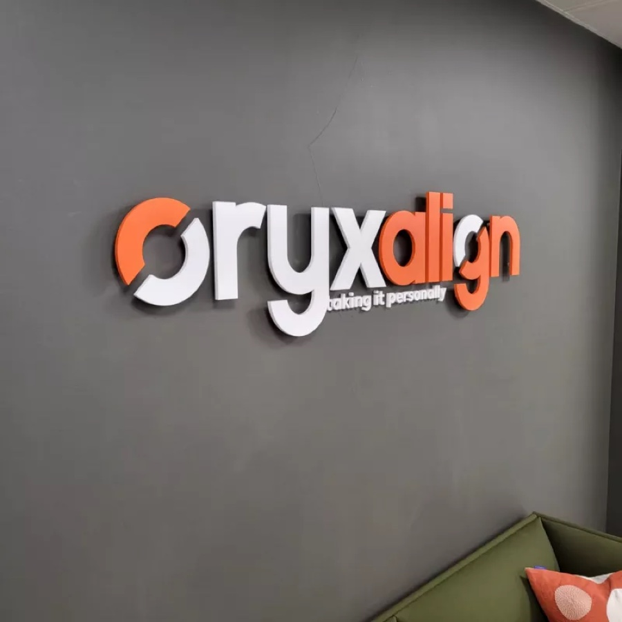
Most people start with clear acrylic and standoffs. If the sign is going outside, or the budget's tight, there's a better-suited board for the job — we'll tell you which.
The premium look. 5mm cast acrylic floated off the wall on polished fixings, printed to the back so colour sits behind the glass-like face.
Two thin aluminium skins around a solid core. Rigid, flat and tough — the standard for exterior building signs that last years outdoors.
Lightweight corrugated plastic. The economical choice for short-run site boards, events and estate-agent stake signs. Waterproof and recyclable.
Smooth, solid PVC that sits flush to the wall. A clean, matte alternative to acrylic for interior signs, notices and wall graphics.
Send whatever you have — a logo, a rough sketch, a PDF. We check resolution, sizing and bleed before anything goes near the printer, and flag anything that won't look sharp.
01 — Before you pay
You see a visual proof and approve it. Nothing is cut or printed until you're happy with the layout, colours and dimensions. What you sign off is what you get.
02 — Before we make it
Once the proof's approved, your sign is made to order and sent tracked across the UK. Standoff fixings and a fitting template are included so it goes up straight, first time.
03 — On your wall
Same workshop, same care — whether it's a 40-piece office rollout or a single house number for the front door.
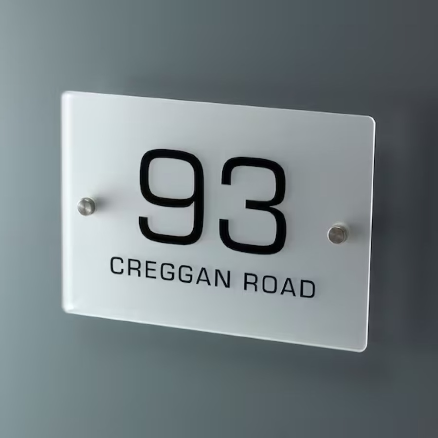
“We treat a £40 house number with the same care as a 40-piece office rollout. Same checks, same proof, same finish.”
Made to order in the UK — not drop-shipped, not outsourced.
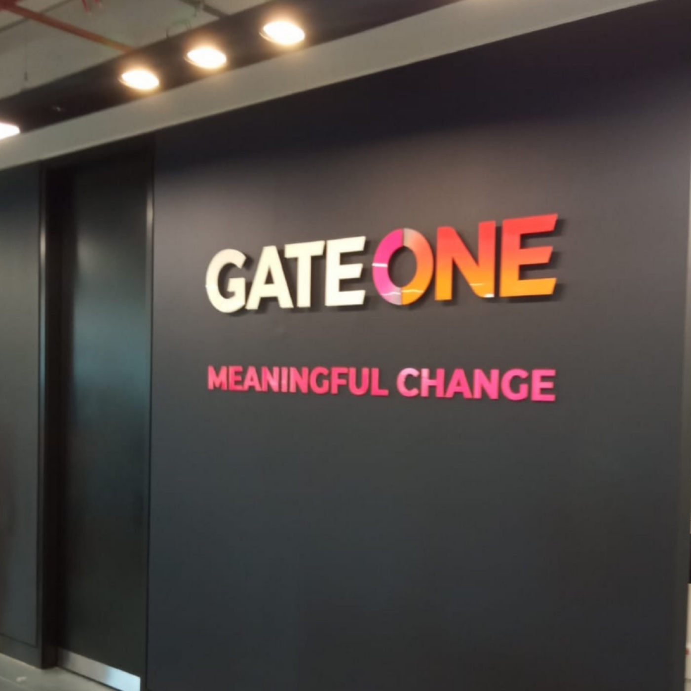
All five handled here — same workshop, same person from your first email to the box on your doormat. No hand-offs, no surprises.
Rough size, quantity, where it's going, your deadline. A logo or sketch helps but isn't essential — we'll figure the rest out together.
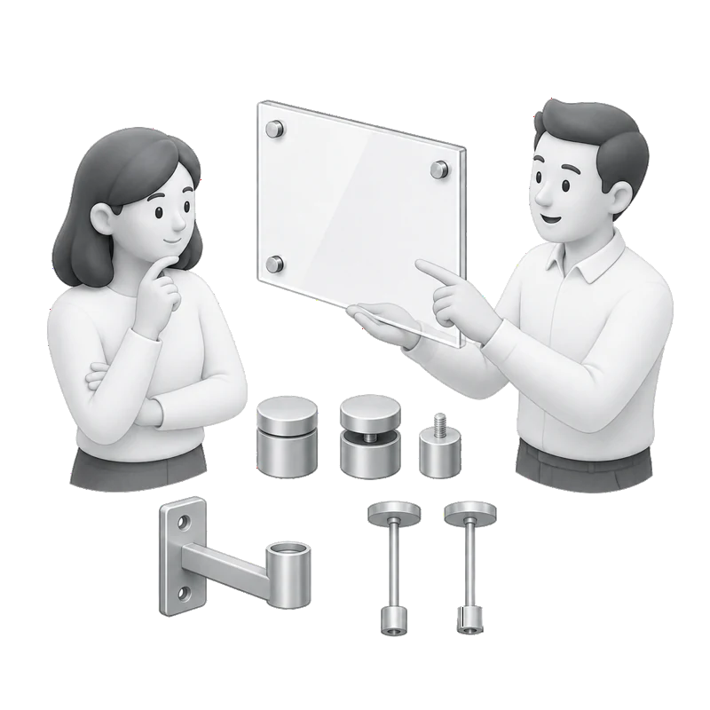
Same-day reply with material, finish and fixings recommended for the job. Clear price, no account needed, no commitment.
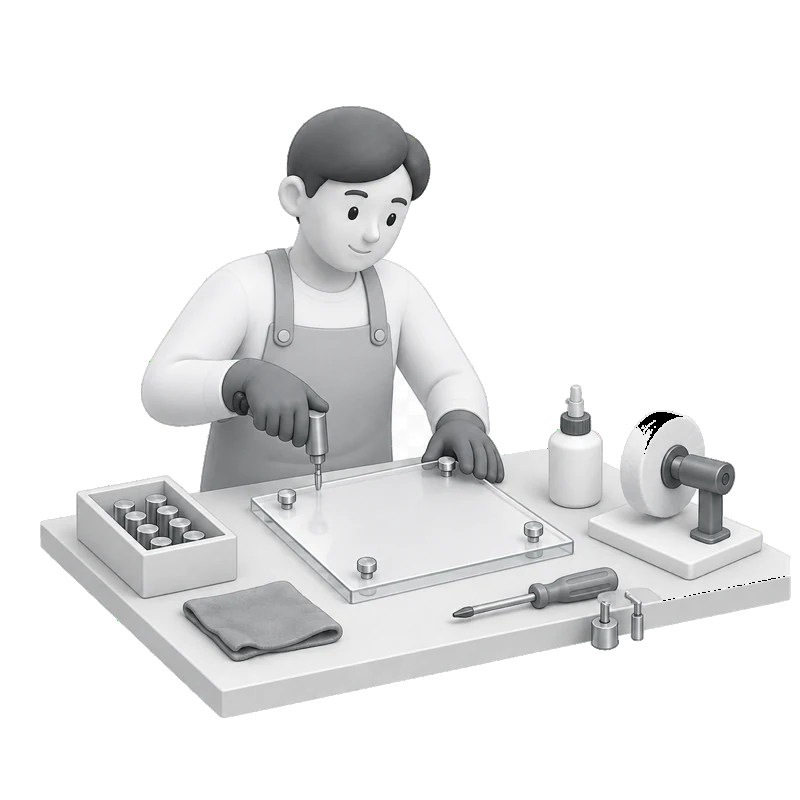
Free artwork check, then a visual proof for sign-off. Nothing's cut or printed until you've approved it. Then it's made on the bench, not outsourced.
Shipped tracked across the UK. A fitting template, the standoff fixings and wall plugs all go in the box — so you can hang it the moment it lands.
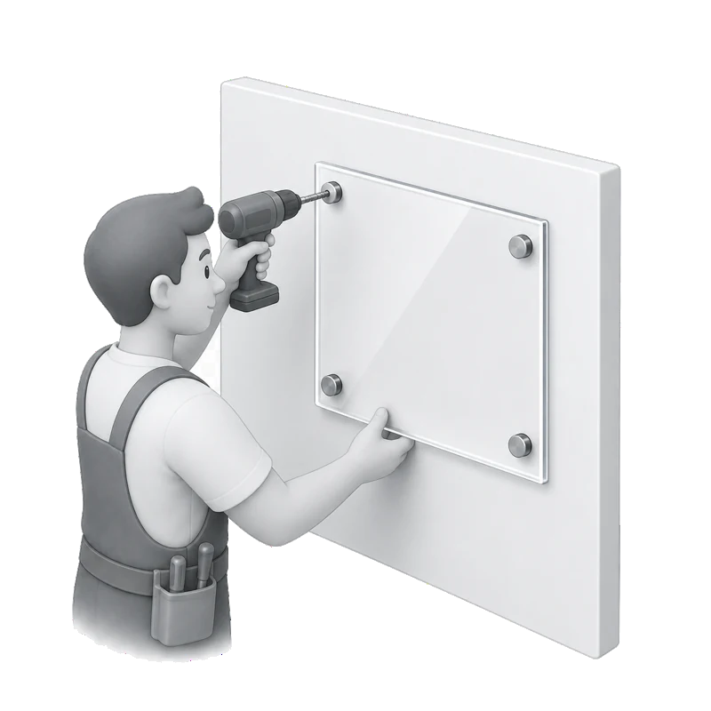
The fitting template means no measuring, no guesswork. Drill the marked points, screw the standoffs in, slide the panel on — done in twenty minutes.
Tell us a little about the sign you need. We'll reply with options and a price — usually the same day.